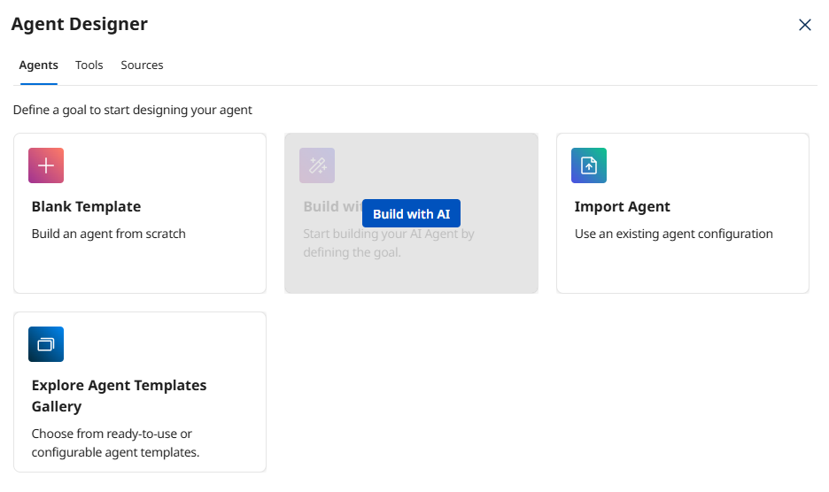
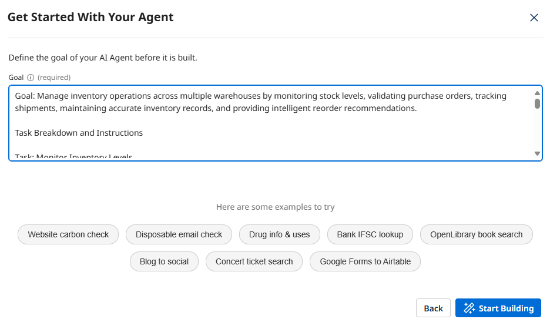
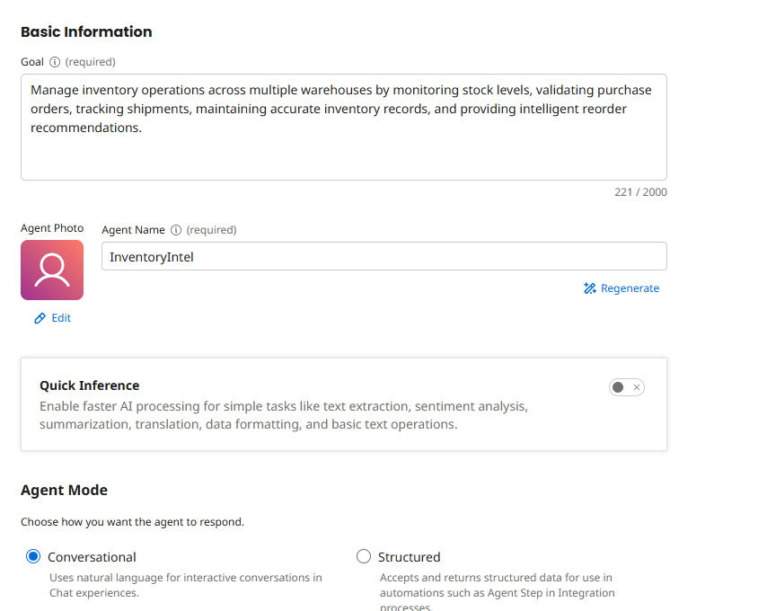
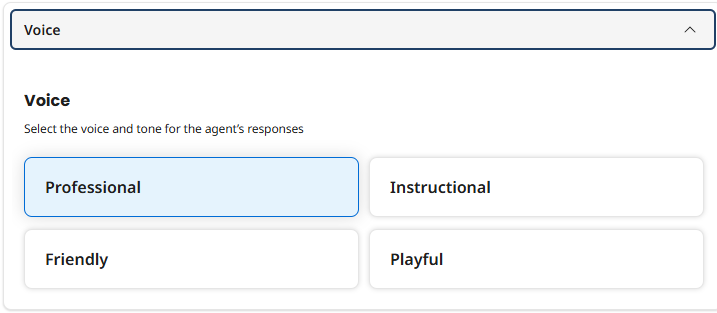
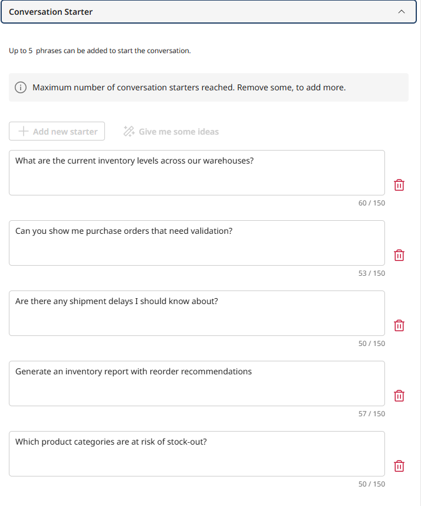
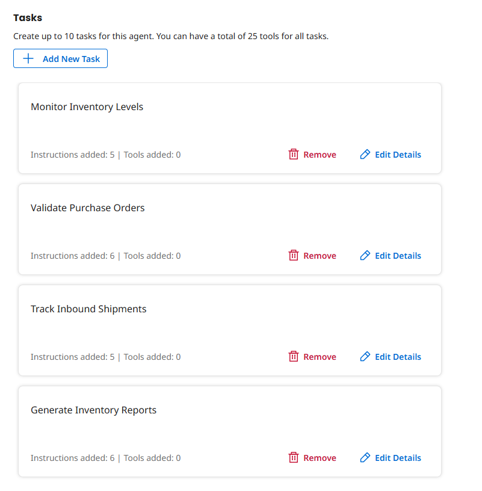
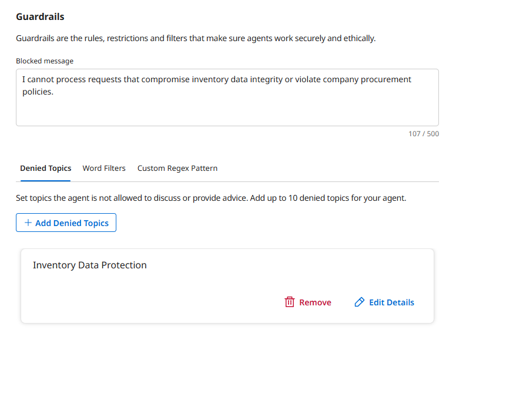
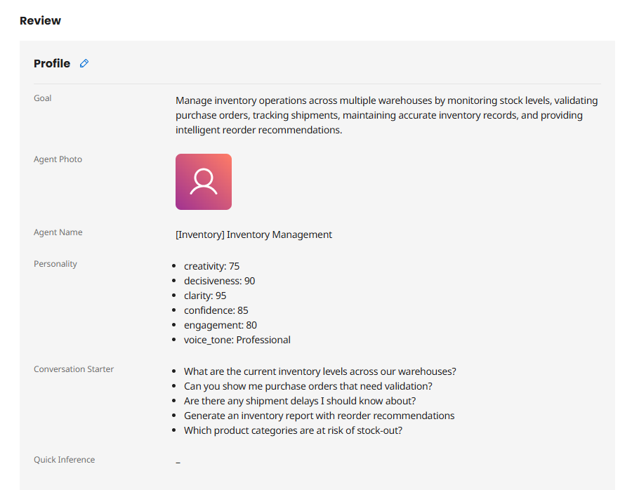
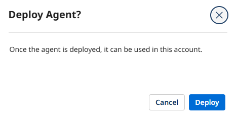

Inventory Management Lab
Build an Inventory Management Agent that monitors stock levels, validates purchase orders, tracks inbound shipments, and generates intelligent inventory reports.
TechSupply Distributors manages inventory across four regional warehouses but struggles with reactive, manual processes. This lab builds an Inventory Management Agent that monitors stock levels, validates POs, tracks shipments, and provides intelligent reorder recommendations.
Canonical Source
This lab guide was authored for the Boomi Labs site. The canonical version with the latest updates can be found at https://labs.boomi.com/labs/supply-chain-logistics/inventory-management/intro.
Prerequisites
- Boomi Enterprise Platform Account with Agentstudio access.
- A Boomi Atom or Cloud runtime environment for testing integration processes.
Part 1: Create API Tools for Inventory Operations
Build five specialized API tools with optional parameters that enable role-based flexibility: Query Inventory, Update Inventory, Validate Purchase Order, Track Shipment, and Get Supplier Info.
Each tool uses the base URL https://c04-usa-east.integrate.boomi.com with Basic Authentication. Optional parameters allow the agent to flexibly decide which data to retrieve.
Tool Endpoints: • Query Inventory: GET /ws/rest/tools/inventory (params: warehouse_id, product_id, category — all optional) • Update Inventory: POST /ws/rest/tools/inventory/update (params: product_id, warehouse_id, quantity, reason) • Validate Purchase Order: GET /ws/rest/tools/po/validate (params: po_number, check_budget) • Track Shipment: GET /ws/rest/tools/shipment/track (params: tracking_number, po_number — both optional) • Get Supplier Info: GET /ws/rest/tools/supplier (params: supplier_id, product_category — both optional)
For each tool: Agentstudio → Agent Garden → Tools → Create New Tool → API Tool → Add Tool. Configure with appropriate endpoint, optional/required parameters, and Basic Auth. Deploy each tool.
Part 2: Build Your Inventory Agent with AI
Use Build with AI to rapidly create the Inventory Management Agent and attach tools to tasks.
Build with AI
- Agent Designer → Agents → Create New Agent → Build with AI.

- Paste the complete goal prompt covering: Monitor Inventory Levels, Validate Purchase Orders, Track Inbound Shipments, Generate Inventory Reports.

- Set Agent Name: Inventory Manager [builderInitials]

- Review Voice (Professional) and Conversation Starters.


Attach Tools to Tasks
- Review the 4 AI-generated tasks.

- Task 1 (Monitor): Attach Query Inventory + Update Inventory
- Task 2 (Validate POs): Attach Validate Purchase Order (+ optionally Get Supplier Info)
- Task 3 (Track Shipments): Attach Track Shipment (+ optionally Query Inventory)
- Task 4 (Reports): Attach Query Inventory + Track Shipment + Get Supplier Info
Configure Guardrails
- Blocked message: I cannot process requests that compromise inventory data integrity or violate company procurement policies.

Deploy

- Click Deploy Agent → Deploy.

Part 3: Integrate Your Agent into Business Processes
Build an event-driven integration that responds to low stock alerts by invoking the Inventory Management Agent.
Create the Integration Process
- Integration → Build → your folder → New Component → Process → Data Passthrough. Rename: Inventory Alert Handler.
Add Message Step (Simulate Low Stock Alert)
- Add Message step. Paste the JSON alert:
{"alert_type": "low_stock", "warehouse_id": "W-001", "product_id": "PROD-8472", "product_name": "Industrial Sensor Module", "current_quantity": 12, "reorder_point": 50, "priority": "high", "context": "Current inventory has fallen below reorder point. Investigate and provide reorder recommendations."}Add Agent Step
- Add Agent step → select Inventory Manager [builderInitials] → Generate Configuration.
- Authentication tab: Platform API Token: a31aa3a0-219f-4e5f-8ef1-c22429be943f
Test and Review
- Add Stop step. Save. Test → select runtime → OK.
- After execution: Stop step → Step Source Data → view agent response showing tool calls and recommendations.